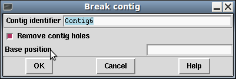

The Break Contig function (which is available from the gap5 Edit menu) enables contigs to be broken by removing the link between two adjacent readings. The user defines the contig coordinate to break at. All sequences starting to the right of that position will be placed into a new contig.

Breaking contig can somtimes cause more holes to be created. The "Remove contig holes" will also cause subsequent breaks to happen at these cases, producing more than one additional contig. If we have aligned against a reference and expect regions of zero coverage then this option should be disabled.